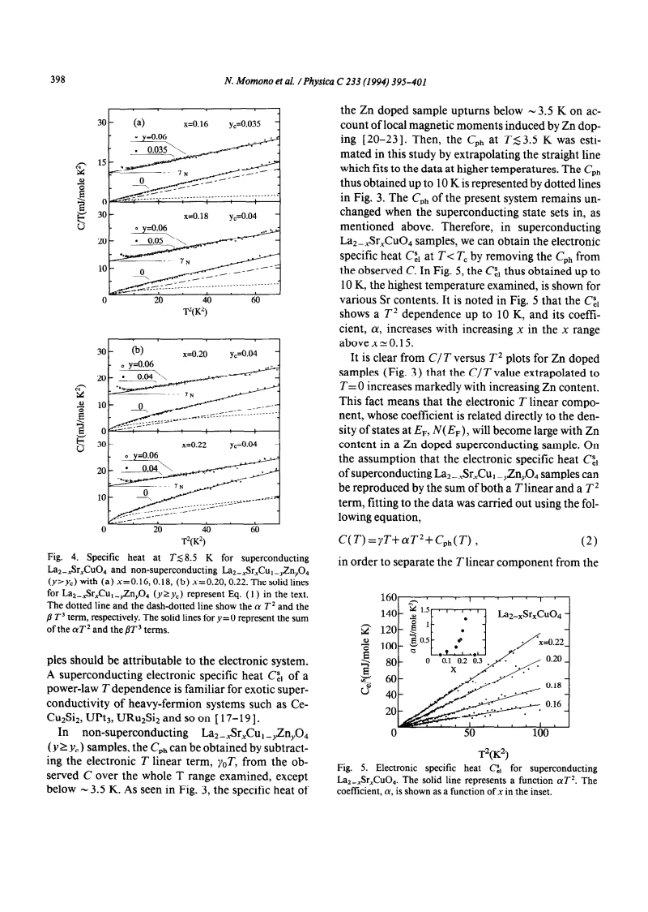
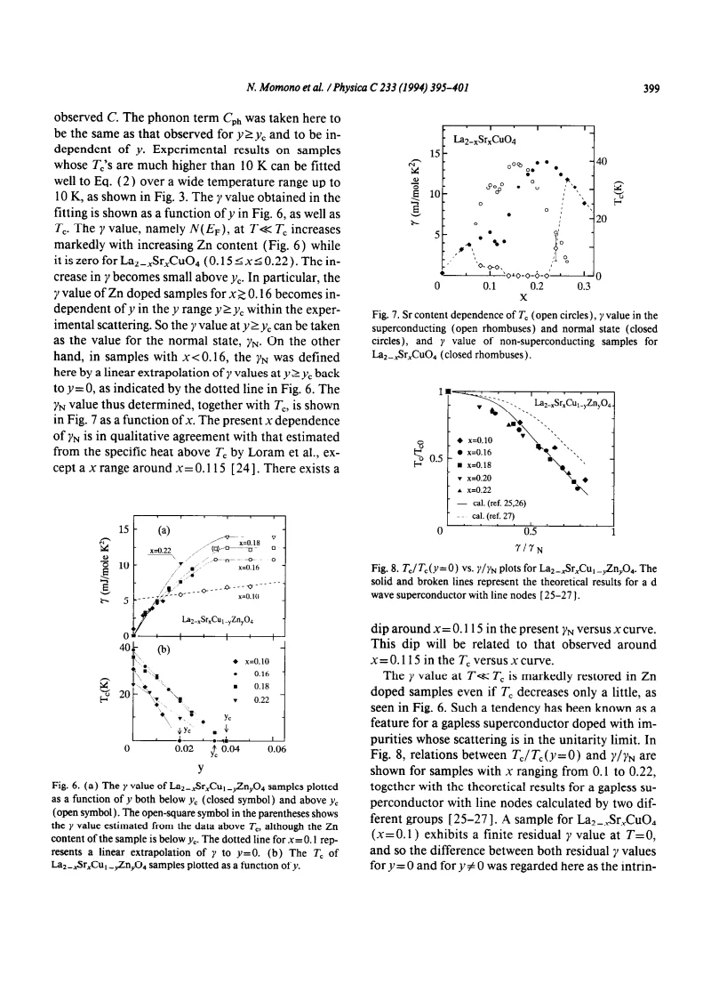

experiment · Momono · supplied source 1994
Low-temperature electronic specific heat of La2-xSrxCuO4 and La2-xSrxCu1-yZnyO4 - Evidence for a d wave superconductor
Clean samples show a low-temperature electronic T² term, while Zn restores a residual linear term and suppresses Tc, supporting a strong-scattering nodal-gap interpretation.
The question: How does low-temperature heat capacity distinguish nodal excitations and impurity-induced residual states?
Before you start: the few terms you need
- Low-temperature heat capacity: separate electronic and phonon contributions
- Nodal gap: low-energy excitations can survive near zeros of the gap
- Zn substitution: a nonmagnetic ion can cause scattering and induce neighboring moments
See → explain → test
Understand it in four pictures.
Picture 1 / 4
Separate three contributions
Look for: Measured heat includes electronic residual, nodal and phonon terms.
Swipe across the picture to read every label, or enlarge it below.
- Total C(T)
- Separate γT, αT², phonons
- Infer low-energy excitations
Teaching schematic. The source tests a fitted decomposition over a limited low-temperature interval.
The electronic T² term must be distinguished from a lattice T³ background.
Picture 2 / 4
Add Zn to a nodal host
Look for: Zn suppresses Tc and restores low-energy spectral weight.
Swipe across the picture to read every label, or enlarge it below.
Teaching schematic. The impurity marker and neighboring spins are qualitative; neither a measured moment map nor a calculated wave function.
A nonmagnetic impurity can strongly disrupt a sign-changing gap through potential scattering.
Picture 3 / 4
Compare clean and substituted samples
Look for: The clean low-temperature electronic term is mainly T²; Zn adds γT.
Swipe across the picture to read every label, or enlarge it below.
- Clean x ≈0.15–0.22
- Zn-substituted
Teaching schematic. No experimental curves are reconstructed.
Residual DOS and the nodal contribution are different terms.
Picture 4 / 4
Use the joint constraint
Look for: Tc reduction is compared with restoration of γ relative to the normal-state value.
Swipe across the picture to read every label, or enlarge it below.
- γ increases; Tc decreases
- Strong-scattering d-wave model
- Conditional support for nodes
Teaching schematic. The relation is not an independent measurement of scattering phase shift.
Agreement supports strong impurity scattering, but background and localization limits remain.
Predict before revealing
What low-temperature term is expected from a finite residual quasiparticle DOS?
Choose an answer, then compare the reasoning.
Finite DOS at the Fermi energy produces a linear electronic heat capacity; line-nodal excitations add a T² term.
Read the answer
A contribution proportional to T Finite DOS at the Fermi energy produces a linear electronic heat capacity; line-nodal excitations add a T² term.
Go deeper Follow the full argument
Why Zn provides a useful perturbation
Momono and colleagues study LSCO and La2−xSrxCu1−yZnyO4 by calorimetry from approximately 2 to 10 K. Zn strongly suppresses superconductivity even though it is a nominally nonmagnetic substitution. The source contrasts two explanations: magnetic pair breaking from induced neighboring Cu moments and strong ordinary potential scattering in a d-wave state. For a sign-changing nodal gap, impurity scattering can create low-energy quasiparticle spectral weight, making the residual linear heat-capacity term a useful complementary observable to Tc. The paper does not deny induced moments; it asks whether they alone explain the strong suppression.
Sample checks and the normal reference
Ceramic synthesis, oxygen annealing and SQUID transitions characterize the samples. The increase of the structural transition temperature with Zn, inferred from the resistivity derivative, supports successful substitution. Critical Zn content depends on Sr content: about 2 percent at x = 0.10 and 3.5 to 4 percent for x = 0.16 to 0.22 suppresses superconductivity. Near the critical content, some resistive traces retain filamentary signatures. At lower x, Zn-substituted samples show localization, whereas higher-x samples remain metallic to low temperature. Therefore Zn is not a universally clean way to expose an unchanged normal state; carrier localization and impurity response become important in the underdoped regime.
The heat-capacity decomposition
Clean superconducting x = 0.16 to 0.22 samples show a downward curvature in C/T versus T², fitted by electronic αT² plus phonon βT³. The quadratic electronic contribution is more visible at larger x; phonons dominate near optimal doping. Nonsuperconducting Zn-rich samples are fitted by γNT + βT³ above the very lowest temperatures. The inferred phonon coefficient is similar within this low-temperature comparison and gives a reasonable Debye scale of roughly 420 to 450 K. Below about 3.5 K, impurity-induced magnetic contributions produce an upturn; the lattice background is extrapolated from higher temperature rather than assigning that upturn to electronic DOS. The usable fit window is thus essential.
What changes when Zn is introduced
For superconducting Zn-substituted samples, the model is C = γT + αT² + Cph. γ grows rapidly with Zn while Tc falls. For x at least approximately 0.16, γ saturates above the critical Zn content and is treated as a normal-state value γN; at lower doping an extrapolation is used because localization changes the reference. The source compares Tc/Tc0 with γ/γN across several x values and finds agreement with strong-scattering nodal-superconductor calculations, better for one theory than another. For x = 0.10 a preexisting residual γ is subtracted when discussing the impurity-induced restoration. The result supports a d-wave interpretation but does not directly measure the impurity scattering phase shift or distinguish all possible disorder models.
Nodes, residual states and the inferred gap
A clean line-nodal spectrum has low-energy DOS proportional to energy, giving electronic heat capacity proportional to T². A finite residual DOS adds a linear γT term. Under the nodal model α is proportional to γN/Δ0, so the authors estimate a decreasing gap amplitude above optimal doping from measured α and γN. This is a model-based gap estimate, not a spectroscopic peak measurement. Their normal DOS maximum is not at the maximum Tc, showing that DOS alone with an unchanged coupling cannot explain the observed dome. The clean samples’ very small residual γ contrasts with residual nuclear response in other supplied samples. Different specimens, orbital/background subtractions and probe weightings must accompany that comparison. The later condensation-energy paper also revisits phonon-reference choices, warning against extending this low-temperature Zn background agreement to all temperatures.
How to compare the evidence
A residual linear term and a nodal quadratic term in electronic heat capacity represent different low-energy information. The latter is compatible with a density of states increasing away from a node, while a residual γ samples states remaining arbitrarily close to the chemical potential within the model. Zn substitution increases γ and suppresses Tc, supporting a strong-scattering interpretation for a sign-changing gap. Yet the low-temperature upturn from induced moments must be excluded from the phonon-reference fit; otherwise a magnetic contribution could be absorbed into an incorrect electronic intercept. The weak low-temperature phonon change in this analysis does not imply Zn is an interchangeable reference over the wider temperature interval studied in source 281. The subtraction must be validated over the actual interval used.
Translate the mathematics Key equations and symbol meanings
C(T) = γT + αT² + Cph(T)
Symbols: γ: residual electronic coefficient; α: nodal electronic coefficient; Cph: phonon heat capacity.
A low-temperature fitting form; magnetic impurity upturns must not be absorbed blindly into γ.
Cph ≈ βT³
Symbols: β: low-temperature phonon coefficient.
This approximation is limited to the low-temperature Debye regime, not the full heat-capacity range.
α ∝ γN/Δ0
Symbols: γN: normal-state electronic coefficient; Δ0: assumed nodal-gap amplitude.
The gap inferred from α depends on the nodal DOS model and the chosen normal reference.
Read the evidence A guided look at the original figures

Open the full original page ↗

Open the full original page ↗
Open the full original page ↗
What this paper does—and does not—establish
- The lattice/background agreement is restricted to the tested low-temperature fits.
- Zn can cause localization and induced magnetic moments as well as potential scattering.
- Residual DOS and gap amplitude are inferred through calorimetric models.
Explain it back.
Try answering aloud before opening the explanation.
Why exclude the impurity upturn from a naive electronic fit?
Induced local moments contribute heat and can inflate an apparent residual DOS.
Does nominally nonmagnetic Zn mean no magnetic response?
No. The source discusses moments induced on neighboring Cu sites.
Is the estimated Δ0 a direct tunneling measurement?
No. It follows from α and γN under a nodal-gap model.
Connect the next paper.
Source version, reading coverage and preservation
Complete supplied substantive text read; selected main figure and equation pages rendered and visually checked
Reviewed body pages: 1, 2, 3, 4, 5, 6. References checked as a bibliography but cited works were not independently re-read.
Original file retained byte for byte. SHA-256: 2e594a06b57bc0da12d0839f9c9194d5eab784b129260c6003e5234031b3d25d
Filename: PhysicaC - Momono - Specific heat and d-wave pairing in LSCO and Zn-LSCO - 1994.pdf.